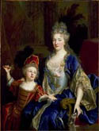

From
the collection

Nicolas
de Largillière
Portrait of Catherine Coustard, Marquise de Castelnau, Wife of Charles-Léonor
Aubry, with Her Son Léonor
About 1699 -1700
Oil on canvas
H.54-1/2 x W.41-3/4 in.
While
seventeenth-century Italian and Spanish art glorified Roman Catholicism
and Dutch painting captured the beauty of everyday reality, French art
of the period celebrated Louis XIV and his court. The favorite portraitist
of this social elite was Nicolas de Largillière, whose large
Parish studio assisted him in producing over twelve hundred paintings
of the most notable people of the age. Many of these works were engraved
for sale to the public. The sitters in this portrait were fairly new
members of the French aristocracy. Charles-Léonor Aubry's father,
after twenty years as secretary to the king, had been made a hereditary
noble—the usual reward for that office. Shortly before his wife and
child sat for this likeness, Charles-Léonor himself had acquired
the magnificent chaateau of Castelnau, in the region of Berry, and with
it the title of marquis. Largillière's ability to convey the
charm and vivacity of his subjects is shown in the warm vitality of
their composed faces and elegant figures. Young Léonor's attire–
red frock trimmed with gold braid– reflects the custom of dressing
little boys like girls until the age of five or six.